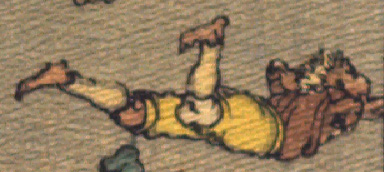

← 图鉴索引

地面にうつ伏せに転ぶ鬼。茶色の着物と黄色の股引をまとっている。
出典：親書誌：U426_nichibunken_0113：Les Ogres d'Oyeyama／日付：2006／資源識別子：U426_nichibunken_0113_0006_0003
Copyright (c)2010- International Research Center for Japanese Studies, Kyoto, Japan. All rights reserved.